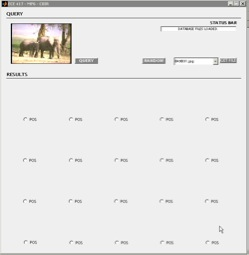

ECE 417 - MP6
Content-Based Image Retrieval
& Relevance Feedback
Assigned: April 8, 2010
Due: April 22, 2010
1. Problem Statement
This machine problem will familiarize you with issues in content-based image retrieval and relevance feedback. Programming to a MATLAB GUI shell, you will need to fill-in the functionality for the two main components of an interactive image retrieval system: the retrieval and relevance feedback modules. Once your GUI is operational, you will then be asked to conduct some basic experiments.
Though the image database, feature extraction and normalization, and all interactive GUI functionality will be provided for you, please start as early as possible.
2. Preliminaries
Once you have obtained the MP6 package, please ensure that you have the following files: databaseInfo.mat, cbirMP.fig, cbirMP.m and the directory ./IMAGES which contains 1400 jpg images.
Once you have ensured you have all these files, you can run the empty GUI shell by typing:
>>cbirMP;
You should see a figure like the following appear:

Figure 1: Initial empty shell for cbirMP
The first half of the GUI contains the query-formulation panel. A random query-by-example image will appear on start-up. You can change the random image by pressing the ‘RANDOM’ button, or load pre-determined experimental images using the drop-down menu and ‘GET FILE’ button. The retrieval results will display in the ‘RESULTS’ panel once a query has been performed, and feedback information on relevant returns can be given by clicking on the ‘POS’ radio buttons. (Initially, nothing will happen when you press the ‘QUERY’ button until you fill in the functionality yourself!)
2.1 GUI Shell
A sophisticated understanding of GUI programming is not needed in-order to successfully complete this machine problem. You will only need to understand two fundamental principles.
The first is that each interactive component in the GUI (radio buttons, push-buttons, etc.) is controlled by a call-back function. Every time a user-event is detected (mouse-click, hover, etc.) the appropriate call-back function is called. For example, once the ‘QUERY’ button is pushed, the functionality in the query-button’s call-back function will be called.
The second important concept is that call-back functions often need to share data variables with each other. Variables defined within a call-back function are local. That is, they are invisible to other call-back functions and are lost once the function goes out-of-scope. In order for call-back functions to share data with each other, a global data store must be used. MATLAB uses the ‘handles’ structure to do this.
2.2 ‘handles’
The ‘handles’ data structure is initialized to hold the handles of all the components in the GUI. For example, if we want to get the handle of the query-by-example axis, we would type:
>>handles.axes1;
In addition to this functionality, it can also be used as a global data store. For example, if we needed the local variable K to be available to all the call-back functions, we would add it to the ‘handles’ structure in the following way:
>>handles.K = K;
>>guidata(hObject,handles);
The ‘guidata’ function saves the ‘handles’ structure globally (‘hObject’ is the handle of the GUI). This is a CRITICAL function call in order to save data globally. If not called, the ‘handles’ structure will not reflect the changes made to it locally once it goes out-of-scope.
You will be using the ‘handles’ structure for handling global data, the particulars of which are given in the next section.
2.3 Important Global Variables
The following sections outlines the global variables in the ‘handles’ structure that you will be using to complete this machine problem. IT IS IMPERATIVE THAT YOU USE THE NAMING CONVENTIONS AS GIVEN BELOW, as other call-back functions in the GUI depend on these names for proper functioning.
|
|
|
|
|---|
|
|
|
47-dimensional image feature for each of 1400 images in the database.
|
|
|
|
Relevance feedback weighting matrix
|
|
|
|
Indices of images in the database that have thus far been labeled as relevant
|
|
|
|
Indices of the Top 20 returned images given a particular query
|
3. Function Specifications
You will be implementing two member functions of the CBIR GUI: the retrieval function activated by the ‘QUERY’ button, and it’s corresponding relevance feedback sub-function.
3.1 The Retrieval Function: query_button_Callback(...)
Each time we enter this callback function, we are required to search the database for the most similar images to a given image or collection of images. To do the query, we will need the database of image features (handles.META_DATA), the index of the image(s) we will use to form our query (handles.posInds) and the relevance feedback weighting matrix (handles.W).
You will need to do the following in-order (starting on Line 129):
1.Compute the mean image-feature vector for images that represent the user’s intended interest (given as the indices in handles.posInds)
2.Using the relevance feedback weighting matrix returned from the call RF(handles), compute the Mahalanobis distance between the mean query-image(s) vector to each of the database image feature-vectors.
where qc is the mean query-image(s) feature vector and xj is the j-th database image’s feature-vector.
3.Rank sort the distances in D(j) from smallest to largest, and return the indices of the smallest distances to handles.currentTopInds
3.2 Relevance Feedback Function: RF(...)
The retrieval function calls the sub-function RF(handles) to analyze the features for images already labeled as positive in order to compute a weighting matrix W.
In order to compute the weighting matrix, you will need to do the following in-order (starting on Line 182):
1.Determine whether this is feedback round 0 (intial seed image) or not
2.If feedback round is 0, return the 47x47 identity matrix as the weighting matrix.
3.If not, for each feature dimension (47 in total):
3.1.Obtain the value of this feature for each of the positively-labeled images (handles.posInds) The end result should be a list of K values, where K is the length of handles.posInds
3.2.Compute the variance of this sample and add 0.0222(for regularization)
3.3.Form and return a diagonal weighting matrix W such that:
4 Experimentation
Once your code is working, you are to conduct five interactive retrieval sessions (with different seed images as provided in the drop-down menu) to explore the effect of relevance feedback on retrieval performance.
Retrieval accuracy will be quantified by Precision. Precision is defined as the proportion of relevant images returned to total number of images returned (in this case 20). For each of the seed images, you will provide a plot showing precision as a function of feedback round for 3 rounds of search (1 intial + 2 relevance feedback). You may put all plots on the same figure.
4.1 Deliverables
You are to return as deliverables:
1.MATLAB code for a fully-functional CBIR GUI. Both empty functions should be complete, and the program should work properly. (You can experiment with retrieval for different images by pressing the ‘RANDOM’ button)
2.Quantitative results in plot form for your interactive retrieval experiments (Precision versus feedback round). Qualitative comments about your results. Specifically:
2.1.What is the general trend of precision versus interaction round? (Or, what should it be?)
2.2.Why do you think certain plots are different than others? (from an image representation perspective)
5 Notes
1.When you’ve made a change to the GUI, please close any previous GUI windows before calling >>cbirMP again. Having the old GUI open when you call a new one creates problems.
2.As order-of-execution in GUIs is more complex than in stand-alone MATLAB scripts, you are strongly encouraged to set break-points in the appropriate places in the GUI script so as to make bug-chasing much easier.
For example, you can write a throw-away line (say disp(‘stop here’) on Line 189 for example), set a break-point there, so that when the ‘QUERY’ button is pressed, execution will stop at that line, and you can write your code without having to worry about the weird GUI infrastructure.
(If you need a refresher on breakpoints in MATLAB don’t hesitate to ask, or look through the MATLAB HELP.)